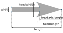

matplotlib.axes.Axes.quiver#
- Axes.quiver(*args, data=None, **kwargs)[source]#
Plot a 2D field of arrows.
Call signature:
quiver([X, Y], U, V, [C], /, **kwargs)
X, Y define the arrow locations, U, V define the arrow directions, and C optionally sets the color. The arguments X, Y, U, V, C are positional-only.
Arrow length
The default settings auto-scales the length of the arrows to a reasonable size. To change this behavior see the scale and scale_units parameters.
Arrow shape
The arrow shape is determined by width, headwidth, headlength and headaxislength. See the notes below.
Arrow styling
Each arrow is internally represented by a filled polygon with a default edge linewidth of 0. As a result, an arrow is rather a filled area, not a line with a head, and
PolyCollectionproperties like linewidth, edgecolor, facecolor, etc. act accordingly.- Parameters:
- X, Y1D or 2D array-like, optional
The x and y coordinates of the arrow locations.
If not given, they will be generated as a uniform integer meshgrid based on the dimensions of U and V.
If X and Y are 1D but U, V are 2D, X, Y are expanded to 2D using
X, Y = np.meshgrid(X, Y). In this caselen(X)andlen(Y)must match the column and row dimensions of U and V.- U, V1D or 2D array-like
The x and y direction components of the arrow vectors. The interpretation of these components (in data or in screen space) depends on angles.
U and V must have the same number of elements, matching the number of arrow locations in X, Y. U and V may be masked. Locations masked in any of U, V, and C will not be drawn.
- C1D or 2D array-like, optional
Numeric data that defines the arrow colors by colormapping via norm and cmap.
This does not support explicit colors. If you want to set colors directly, use color instead. The size of C must match the number of arrow locations.
- angles{'uv', 'xy'} or array-like, default: 'uv'
Method for determining the angle of the arrows.
'uv': Arrow directions are based on display coordinates; i.e. a 45 angle will always show up as diagonal on the screen, irrespective of figure or Axes aspect ratio or Axes data ranges. This is useful when the arrows represent a quantity whose direction is not tied to the x and y data coordinates.
If U == V the orientation of the arrow on the plot is 45 degrees counter-clockwise from the horizontal axis (positive to the right).
'xy': Arrow direction in data coordinates, i.e. the arrows point from (x, y) to (x+u, y+v). This is ideal for vector fields or gradient plots where the arrows should directly represent movements or gradients in the x and y directions.
Arbitrary angles may be specified explicitly as an array of values in degrees, counter-clockwise from the horizontal axis.
In this case U, V is only used to determine the length of the arrows.
For example,
angles=[30, 60, 90]will orient the arrows at 30, 60, and 90 degrees respectively, regardless of the U and V components.
Note: inverting a data axis will correspondingly invert the arrows only with
angles='xy'.- pivot{'tail', 'mid', 'middle', 'tip'}, default: 'tail'
The part of the arrow that is anchored to the X, Y grid. The arrow rotates about this point.
'mid' is a synonym for 'middle'.
- scalefloat, optional
Scales the length of the arrow inversely.
Number of data values represented by one unit of arrow length on the plot. For example, if the data represents velocity in meters per second (m/s), the scale parameter determines how many meters per second correspond to one unit of arrow length relative to the width of the plot. Smaller scale parameter makes the arrow longer.
By default, an autoscaling algorithm is used to scale the arrow length to a reasonable size, which is based on the average vector length and the number of vectors.
The arrow length unit is given by the scale_units parameter.
- scale_units{'width', 'height', 'dots', 'inches', 'x', 'y', 'xy'}, default: 'width'
The physical image unit, which is used for rendering the scaled arrow data U, V.
The rendered arrow length is given by
length in x direction = $frac{u}{mathrm{scale}} mathrm{scale_unit}$
length in y direction = $frac{v}{mathrm{scale}} mathrm{scale_unit}$
For example,
(u, v) = (0.5, 0)withscale=10, scale_unit="width"results in a horizontal arrow with a length of 0.5 / 10 * "width", i.e. 0.05 times the Axes width.Supported values are:
- 'width' or 'height': The arrow length is scaled relative to the width or height
of the Axes. For example,
scale_units='width', scale=1.0, will result in an arrow length of width of the Axes.
'dots': The arrow length of the arrows is in measured in display dots (pixels).
- 'inches': Arrow lengths are scaled based on the DPI (dots per inch) of the figure.
This ensures that the arrows have a consistent physical size on the figure, in inches, regardless of data values or plot scaling. For example,
(u, v) = (1, 0)withscale_units='inches', scale=2results in a 0.5 inch-long arrow.
- 'x' or 'y': The arrow length is scaled relative to the x or y axis units.
For example,
(u, v) = (0, 1)withscale_units='x', scale=1results in a vertical arrow with the length of 1 x-axis unit.
- 'xy': Arrow length will be same as 'x' or 'y' units.
This is useful for creating vectors in the x-y plane where u and v have the same units as x and y. To plot vectors in the x-y plane with u and v having the same units as x and y, use
angles='xy', scale_units='xy', scale=1.
Note: Setting scale_units without setting scale does not have any effect because the scale units only differ by a constant factor and that is rescaled through autoscaling.
- units{'width', 'height', 'dots', 'inches', 'x', 'y', 'xy'}, default: 'width'
Affects the arrow size (except for the length). In particular, the shaft width is measured in multiples of this unit.
Supported values are:
'width', 'height': The width or height of the Axes.
'dots', 'inches': Pixels or inches based on the figure dpi.
'x', 'y', 'xy': X, Y or \(\sqrt{X^2 + Y^2}\) in data units.
The following table summarizes how these values affect the visible arrow size under zooming and figure size changes:
units
zoom
figure size change
'x', 'y', 'xy'
arrow size scales
'width', 'height'
arrow size scales
'dots', 'inches'
- widthfloat, optional
Shaft width in arrow units. All head parameters are relative to width.
The default depends on choice of units above, and number of vectors; a typical starting value is about 0.005 times the width of the plot.
- headwidthfloat, default: 3
Head width as multiple of shaft width. See the notes below.
- headlengthfloat, default: 5
Head length as multiple of shaft width. See the notes below.
- headaxislengthfloat, default: 4.5
Head length at shaft intersection as multiple of shaft width. See the notes below.
- minshaftfloat, default: 1
Length below which arrow scales, in units of head length. Do not set this to less than 1, or small arrows will look terrible!
- minlengthfloat, default: 1
Minimum length as a multiple of shaft width; if an arrow length is less than this, plot a dot (hexagon) of this diameter instead.
- colorcolor or list color, optional
Explicit color(s) for the arrows. If C has been set, color has no effect.
This is a synonym for the
PolyCollectionfacecolor parameter.
- Returns:
- Other Parameters:
- dataindexable object, optional
If given, all parameters also accept a string
s, which is interpreted asdata[s]ifsis a key indata.- **kwargs
PolyCollectionproperties, optional All other keyword arguments are passed on to
PolyCollection:Property
Description
a filter function, which takes a (m, n, 3) float array and a dpi value, and returns a (m, n, 3) array and two offsets from the bottom left corner of the image
array-like or float or None
bool
antialiasedoraaorantialiasedsbool or list of bools
array-like or None
CapStyleor {'butt', 'projecting', 'round'}(vmin: float, vmax: float)
BboxBaseor Nonebool
Patch or (Path, Transform) or None
Colormapor str or Nonecolor or list of RGBA tuples
edgecolororecoredgecolorsfacecolororfacecolorsorfcstr
{'/', '\', '|', '-', '+', 'x', 'o', 'O', '.', '*'}
unknown
bool
JoinStyleor {'miter', 'round', 'bevel'}object
linestyleordashesorlinestylesorlsstr or tuple or list thereof
linewidthorlinewidthsorlwfloat or list of floats
bool
Normalizeor str or None(N, 2) or (2,) array-like
list of
AbstractPathEffectlist of array-like
None or bool or float or callable
float
bool
sizesnumpy.ndarrayor None(scale: float, length: float, randomness: float)
bool or None
str
list of str or None
list of array-like
unknown
bool
float
See also
Axes.quiverkeyAdd a key to a quiver plot.
Notes
Arrow shape
The arrow is drawn as a polygon using the nodes as shown below. The values headwidth, headlength, and headaxislength are in units of width.
The defaults give a slightly swept-back arrow. Here are some guidelines how to get other head shapes:
To make the head a triangle, make headaxislength the same as headlength.
To make the arrow more pointed, reduce headwidth or increase headlength and headaxislength.
To make the head smaller relative to the shaft, scale down all the head parameters proportionally.
To remove the head completely, set all head parameters to 0.
To get a diamond-shaped head, make headaxislength larger than headlength.
Warning: For headaxislength < (headlength / headwidth), the "headaxis" nodes (i.e. the ones connecting the head with the shaft) will protrude out of the head in forward direction so that the arrow head looks broken.


{kind=link}